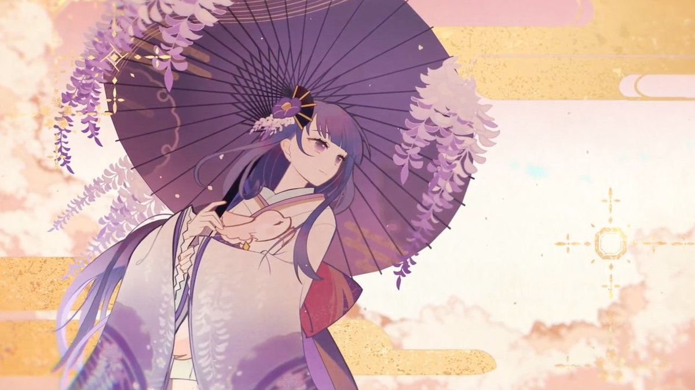
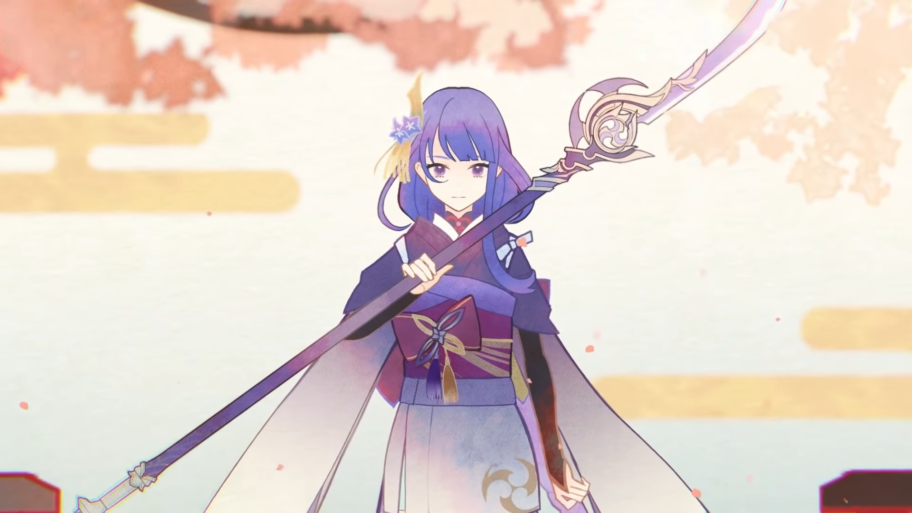
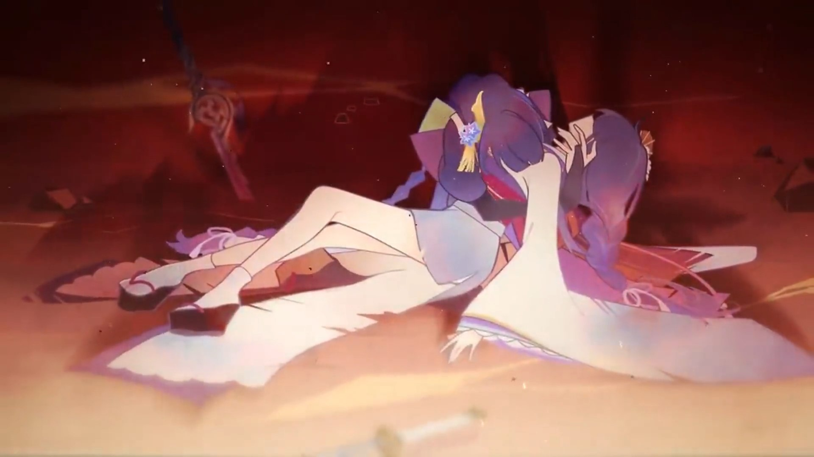
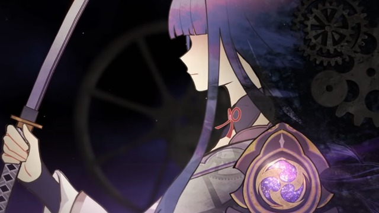
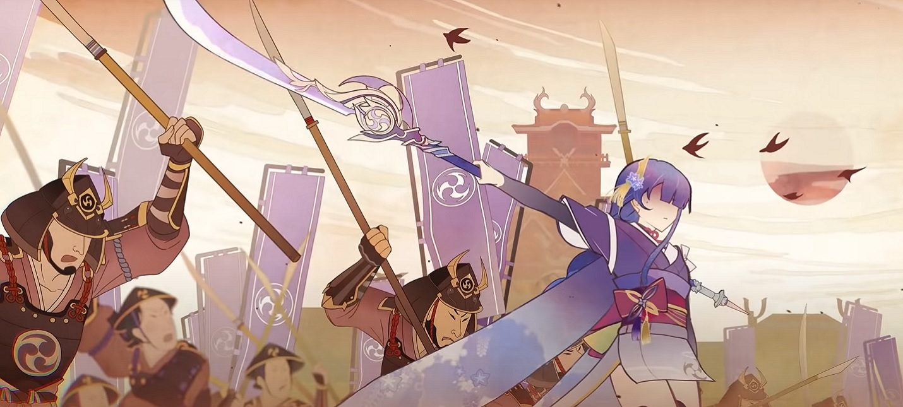
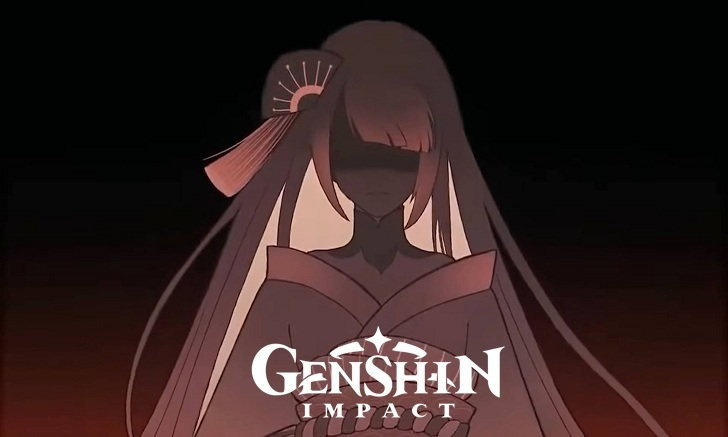
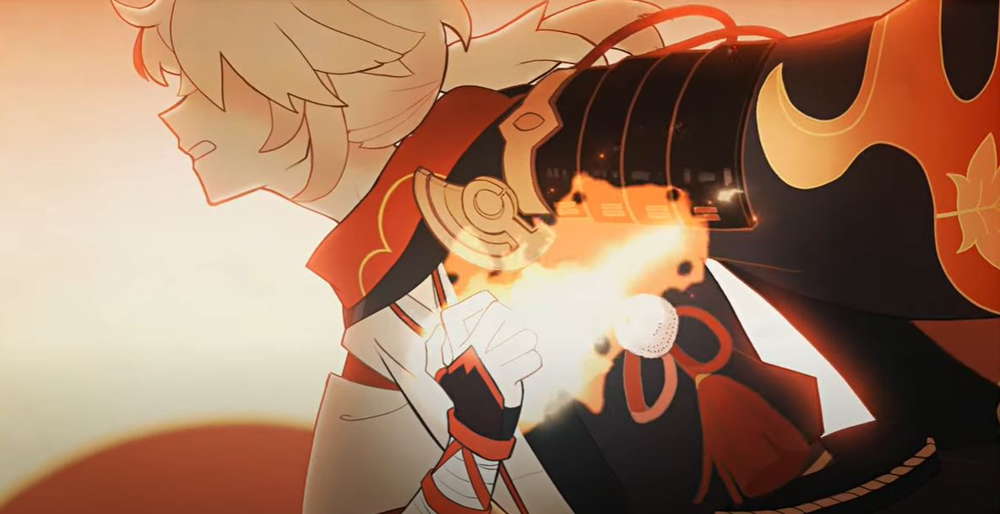
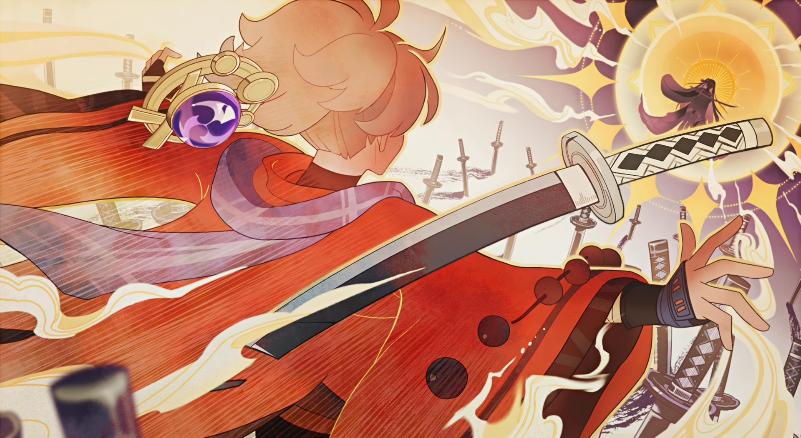
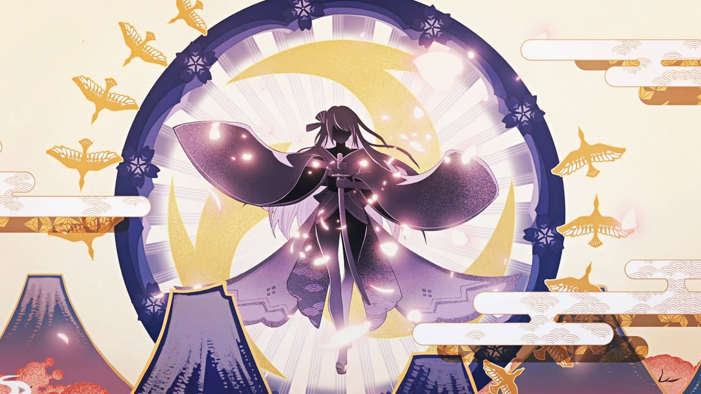

INAZUMA
Historia
Antes de la existencia de Inazuma, existio en la luz del mundo, Enkanomiya, una civilización que se extendio por todo el territorio. Sin embargo, un día, una guerra entre dioses celestiales, hizo que Enkanomiya cayera a las profundidas dando lugar a lo que hoy conocemos como Inazuma. Esa guerra continuaria por los siguientes siglos. En ese tiempo, Islas como Tsurumi o Seirai, se desarrollaron.
En medio de la batalla, nacieron los Kitsunes en Narukami, los ninjas en otras regiones, y los dragartos evolucionaron hasta lograr hablar el idioma humano. Pero, aunque deberían llevarse bien, todos tenían una creencia distinta y no lograban ponerse de acuerdo. Hasta que un día, dos diosas gemelas, Raiden Makoto (Baal) y Raiden Ei (Beelzebul) vencieron a todos los demás dioses. En ese momento, Makoto, la más fuerte se convierte en el primer arconte Electro, la Diosa de la transitoriedad.
De esta manera, Makoto se vuelve de las elegidas por celestia para defender a su pueblo, y los dioses menores algunos colaboran con la vida en inazuma, otros se negaron por completo y huyeron a islas en el Mari Oscuro donde se convirtieron en dioses malignos. Estos dioses planean un ataque frente a una civilización lejana, conocida como Khaerian, un pais con grandes cantidades de tecnologia y muy avanzada. Aunque tuvieran ventaja, Khaerian iba perdiendo terreno todos los días, entonces Makoto decidio ir sola a proteger a las personas de Khaerian, y finalmente ella fallece.
Cuando Ei se entero que Makoto partió sola a Khaerian, fue a ayudarla, pero unicamente llego a ver como su hermana moria en sus brazos. Ei lloro desconsoladamente, pero en medio de la batalla perdida, no pudo hacer más que retirarse con el corazón roto. Cuando llego a Inazuma, penso en su hermana, en su pueblo, y en el mayor deseo de Makoto proteger a Inazuma.
Entonces, hizo un juramento con ella misma. Lucharía hasta el final, para defender a su pueblo, y lograría la eternidad, de esta manera nadie volvería a perder a un ser querido. Se despidio de su hermana, tomo su lanza divina, se limpio las lagrimas y lidero a sus tropas hasta la victoria. Al final, ella lo consiguio, más eso no alivio el dolor de su corazon.
Después de la guerra, Ei asume oficialmente el cargo de arconte Electro, adoptando los títulos de Makoto como propios y oculto la muerte de su hermana tomando su lugar por completo. Decidida a no perder a más gente, como Arconte, anhela lograr la eternidad. Para ello, creo una marioneta que se veía igual a ella, y de esta manera Ei no tendría que salir nunca de su meditación. La marioneta, se conoce como Shogun, le dio instrucciones para gobernar según la eternidad que Ei consideraba correcta.
Ls Shogun prohibe las visiones, fuentes de poder sagrado en las personas que surge cuando tienen una fuerte resolución. Además, cierra las fronteras, y aisla inazuma del mundo exterio, impide el comercio, con el unico fin de impedir que la Inazuma que conoce cambie. Esta resolución, estanco negocios, impidió el avance y sobretodo costo la vida de varias personas que se involucraron en la rebelion y el conflicto interno.
El conflicto interno, se atribuye principalmente al decreto que captura las visiones de las personas de Inazuma. Durante este, se crean varios bandos, uno que defiende al Shongunato, otro intermedio, y otro que se opone al decreto. El equipo rebelde tiene su base en la isla Watatsumi, una isla de coral donde lidera Sangonomiya Kokomi y Gorou. Mientras que el equipo del shongunato es el famoso clan Kujou que ha sido corrompido y por ello hace todo lo que le ordene la shogun. El equipo neutro, pertenece a la casa Kamisato. En este conflicto murio mucha gente, hasta la llegada de un viajero que vencio a Ei, y le mostro que si no había eternidad, lo mejor que podía hacer era confiar en su pueblo. Confiar en que sus voluntades y resoluciones son lo que construye un mañana.
Finalmente, Ei acepta, libera la tormenta electrica, se abren las rutas comerciales, y se devuelven cada una de las visiones a la persona a la que corresponde. Es entonces cuando el espiritu de Makoto aparece frente a Ei, para recordarle que debe vivir el presente. Desde ese momento, la diosa de Inazuma, a veces recorre la ciudad y permite a su pueblo expresarse y decidir.
